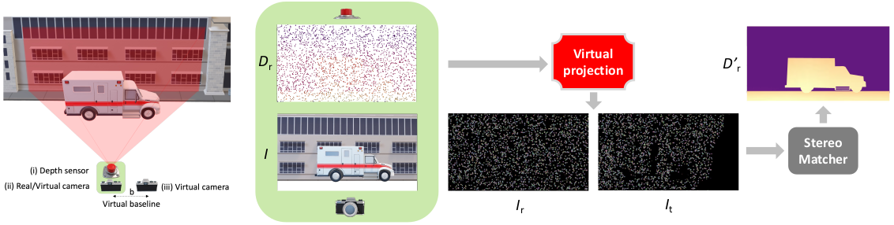
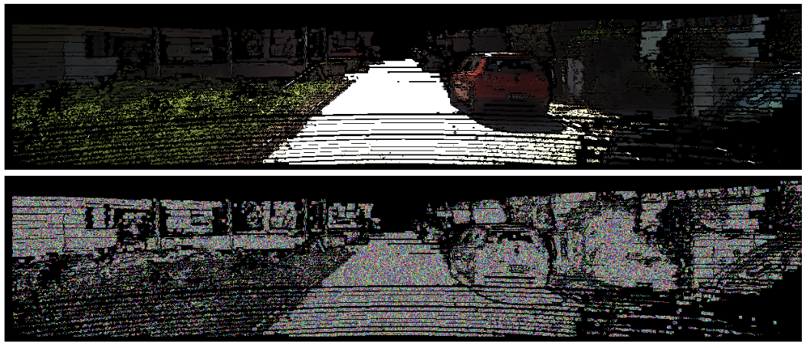

3 - Virtual Pattern Projection for Depth Completion (VPP4DC)

|
Overview of the basic VPP4DC paradigm.
On the left, the proposed stereo setup we designed on top of the standard depth completion sensor suite enclosed in the green area. On the right, an outline of the proposed random projection that allows feeding a stereo matcher with a fictitious virtual patterned stereo pair and, optionally, an RGB image to tackle depth completion.
|
Given the standard setup for depth completion enclosed in the green area in the previous figure -- consisting of a depth sensor (i) and an optional RGB camera (ii) -- our proposal casts the task as a stereo correspondence problem using a virtual stereo setup with two fictitious cameras, one in the same position as the actual RGB device if present (ii), and the other (iii) at a distance $b$, \ie the virtual stereo baseline. While the focal length $f$ of the virtual cameras is constrained by the depth sensor (i) or the RGB camera (ii), the virtual stereo baseline $b$ is a hyper-parameter.
We assume that the real RGB camera and the depth sensor are calibrated and we set the origin of the reference system in the camera. Therefore, we can project sparse depth points $\mathbf{Z}$ in the reference RGB camera view using the camera matrix $\mathbf{K}_r$ and the roto-translation $[\mathbf{R}_r|\mathbf{T}_r]$ between the depth sensor and the RGB camera:
$$Z_r = \mathbf{K}_r \left[ \mathbf{R}_r | \mathbf{T}_r \right] \mathbf{Z}$$
where $Z_r$ is the sparse depth map projected into the reference image plane. The proximity of the depth sensor and RGB camera can reduce occlusion issues when projecting, although they cannot be entirely avoided -- yet, can be easily identified and filtered out.
Then, we place an additional target virtual camera sharing the same intrinsics $\mathbf{K}_r$ of the other virtual device at a horizontal distance to create a virtual baseline $b$.
Although we will stick to this setup, it is worth noting that the target virtual camera is not constrained to the horizontal axis.
In the outlined setup, we aim to project onto the two fictitious cameras appropriate virtual patterns coherent with the 3D structure of the scene framed by the depth sensor, as if a projector were present in the setup.
At first, the sparse depth points are converted to the disparity domain using the parameters of the virtual stereo rig as follows:
$$D_r = \frac{b \cdot f}{Z_r}$$
where $Z_r$ is the sparse depth map aligned with the reference image, $b$ is the virtual baseline, and $f$ is the focal length of the virtual cameras (the same as the RGB camera). $D_r$ is the sparse disparity map aligned with the reference virtual image $I_r$ and the RGB image $I$.
Given our setup and the sparse depth points converted into disparity values, we can project the same pattern onto the fictitious reference $I_r$ and target $I_t$ cameras for each point $(x,y)$ with an available disparity value $d(x,y)$ in the reference image. It can be done by recalling that with a calibrated stereo system, the disparity $d(x,y)$ links one point $I_r(x,y)$ in the reference image with the corresponding $I_t(x',y)$ point in the target, with $x'=x-d(x,y)$.
Once the two fictitious images have been generated, a stereo matcher processes them and produces a disparity map, that is then triangulated back into a densified depth map.
For projection: we manage real-valued disparities and occlusions, respectively by i) applying weighted splatting in the target image and ii) reprojecting the foreground pattern on occluded regions, as in Active Stereo Without Pattern Projector.
Independently of the pattern choice, discussed next, the process outlined is feasible only for a subset of the image points, and we set other points to a constant color (e.g., black in all our experiments). Therefore, from a different point of view, each fictitious camera gathers sparse content coherent with the 3D structure of the scene only where a fictitious virtual pattern projector sends its rays.
Regarding the virtually projected patterns, we outline the two following strategies.
-
RGB Projection. We project onto the two fictitious images the same content $I(x,y)$ from the real camera, for each pixel with an available disparity value:
$$
\begin{split}
I_r(x,y) \leftarrow I(x,y), &\hspace{1cm}
I_t(x',y) \leftarrow I(x,y), &\hspace{1cm} x'={} &x-d(x,y)
\end{split}
$$
-
Random Pattern Projection. Instead of warping the image content, we project more matching-friendly patterns. Following Active Stereo Without Pattern Projector, we project coherently distinctive patterns onto the two fictitious cameras:
$$
\begin{split}
I_r(x,y) \leftarrow \mathcal{P}, &\hspace{1cm}
I_t(x',y) \leftarrow \mathcal{P}, &\hspace{1cm}
x'={} &x-d(x,y)
\end{split}
$$
where operator $\mathcal{P}$ generates a random point-wise pattern applied coherently to both images.
On the one hand, compared to RGB Projection the random patterns are inherently less ambiguous by construction, for instance, in regions featuring a uniform texture.
On the other hand, the sparse patterning prevents a complete awareness of the whole scene content for both strategies. However, such cue can be partially recovered from the RGB image if the stereo matcher can exploit image context.

|
Qualitative view on uniform areas.
RGB projection keeps uniform regions as such, while random projection makes them distinctive.
|
We extend the strategy outlined so far to i) increase pattern density according to the RGB content and ii) handle issues regarding the horizontal field of view in the stereo system.
-
Adaptive Patch-based Pattern Projection. The basic point-wise patterning strategy can be expanded to enhance pattern density at nearby points by assuming the same disparity value locally. However, this approach may result in the degradation of fine details. To address this issue, we leverage the RGB image $I$ to extract dense and meaningful scene cues. We propose a heuristic inspired by the bilateral filter to adapt the shape of the patch and handle overlapping patches.
For a fixed-size patch $\mathcal{N}(x,y)$ centered on an available disparity point $(x,y)$, we estimate the consistency of each nearby point $(x+x_{w},y+y_{w})$ within $\mathcal{N}(x,y)$ with the central point as:
$$ W_{(x+x_{w},y+y_{w})} = e^{-\left(\frac{\left(x_{w}\right)^{2}+\left(y_{w}\right)^{2}}{2\sigma_{xy}^{2}}+\frac{\left(I\left(x+x_{w},y+y_{w}\right)-I\left(x,y\right)\right)^{2}}{2\sigma_{i}^{2}}\right)} $$
Additionally, we update the upper threshold similarity scores in a data structure of the image size initialized to zero for each available sparse disparity point. Hence, we can project the random pattern with the highest score for overlapping patches.
-
Image Padding. As for any stereo setup, our made of two virtual cameras inherits a well-known issue: the cameras do not frame a completely overlapping portion of the scene.
Specifically, the left border of the reference image will not be visible in the target image.
However, since we have complete control over image generation, we can easily eliminate this issue by extending the field of view of our fictitious cameras on the left side, by applying image padding to account for the largest warped point out of the image $w_\text{out}$.
Accordingly, we can project virtual patterns that otherwise would pop out the left image border.
Ultimately, the only trick needed is left cropping the output dense disparity map.
|